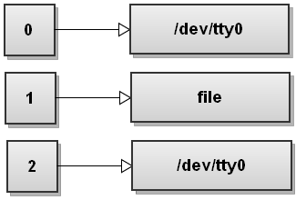
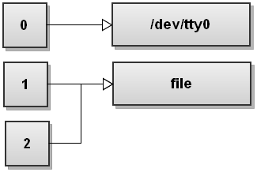
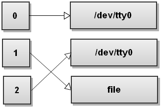

Bash输出重定向
Posted on 周日 09 七月 2017 in Note
对 bash 命令一直不太熟，每次使用 nohup 命令都要从网上现找。
有时会看到一些命令后面跟着 "2>&1" 的参数。比如
nohupy python test.py > test.log 2>&1
之前也没有多管，直接用了。前几天又在其他人的 shell 脚本中看到 "2>&1", 才想起去了解一下 ，现把内容整理一下做记录。
主要内容借鉴于Bash One-Liners Explained, Part III: All about redirections - good coders code, great coders reuse，原文非常详细，欢迎访问原文。
当 bash 启动时，会开启三个标准文件描述符：stdin, stdout, stderr。

它们都指向了 /dev/tty0 即我们当前使用的控制台。 0 代表 stdin， 1 代表 stdout, 2 代表stderr。
当我们输入一个命令：
python test.py > file
> 就是输出重定向运算符，bash 首先会以写的形式打开 file，成功后上述命令的 stdout 就会被发送到这个打开的 file 中。如果打开失败，则整个命令失败。
python test.py > file 命令等同于 python test.py 1>file，因为 1 就代表标准输出 stdout。这个时候的文件描述符指向如下：

那么 2>&1 代表什么呢，它代表的是，将 2 所在文件描述符指向 1 所指向的内容。 如果 1 此时指向的是 file， 那么 2 也指向同一个 file。如下图所示：

另外命令python test.py &> file可以实现与 2>&1 一样的效果， &> 运算符指的是同时把命令的 stdout 和 stderr 重定向到同一个 file中。
注意：重定向命令的参数是受顺序影响的！
比如：
python test.py > file 2>&1
和命令
python test.py 2>&1 >file
是不一样的。
第一个命令的效果是：
但是第二个命令的效果是：
